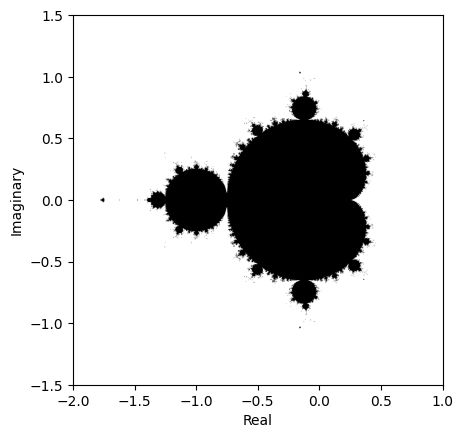
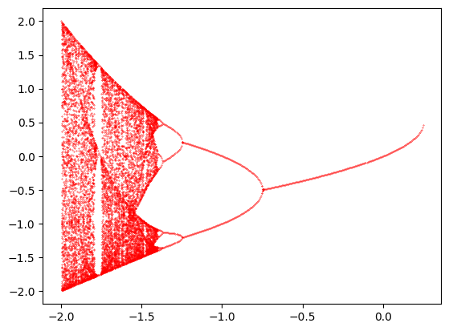
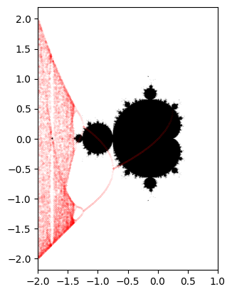

An in-depth look at the fascinating features of the Mandelbrot set, the most famous fractal in mathematics.
Author
Shourya Eaga
Published
January 17, 2026
1 Introduction to the Mandelbrot Set
Before thinking about what different parts of the Mandelbrot set may mean, what exactly is the Mandelbrot set? The most concise definition is that which Wikipedia gives:
“The Mandelbrot set is a two-dimensional set that is defined in the complex plane as the complex numbers \(c\) for which the function \(f_c(z) = z^2+ c\) does not diverge to infinity when iterated starting at \(z=0\)”
But what does this exactly mean?
This means that if you take a complex number \(c\) of the form \(a+bi\) and let \(z_0=0\), and define \(z_{n+1}=z_{n}^2+c\) and repeatedly iterate through this iterative formula, you have two possible options - it “blows up” to infinity, or it remains stable. Here is an example (where \(c\) is a real number) when \(c=-1\)
Looking at the magnitudes of the complex numbers, we see that they diverge to infinity again, concluding that \(c=1+i\)is again outside the Mandelbrot set.
We can prove that for any value of \(c\), if at any point in its iterative sequence, \(|z_n| \gt 2\), then it will escape to infinity, and thus, the mandelbrot set is bounded by \(|c| \lt 2\). Look at the dropdown below for the proof.
Proof
Theorem 1 (Mandelbrot set escape radius) Let \(c \in \mathbb{C}\), and define the sequence \(z_n\) by
\[
\begin{aligned}
z_0 &= 0 \\
z_{n+1} &= z_n^2 + c \\
\end{aligned}
\] If at any point in its iterative sequence, \(|z_n| \gt 2\), then it will escape to infinity.
Proof. If \(|z_{n+1}|=|z_n^2+c|\) then by the reverse triangle inequality, \[
|z+w| \ge \bigl| |z|-|w| \bigr| \\
\] it follows \[
|z_n^2+c| \ge \bigl| |z_n^2|-|c| \bigr| \\
\] if \(|z_n| \ge |c|\) we can deduce \[
\begin{aligned}
\bigl| |z_n^2|-|c| \bigr| &\ge \bigl| |z_n^2|-|z_n| \bigr| \\
\bigl| |z_n^2|-|c| \bigr| &\ge \bigl| |z_n|(|z_n|-1) \bigr| \\
\end{aligned}
\] If \(|z_n| \gt 2\) then \(|z_n|-1 \gt 1\). Let \(\alpha \gt 1\) where \(\alpha\) is any number in the range, which we can substitute into the equation. \[
\begin{aligned}
|z_{n+1}| \ge \bigl| |z_n|\alpha \bigr| \\
\text{hence, if } |z_n| > 2 \text{ then } z_{n+1} > z_n \\
\text{By induction, it will escape to infinity} \\
\square
\end{aligned}
\]
For what this would look like on the complex plane, where points in the Mandelbrot set are in black, and points outside the Mandelbrot set are in white, see Figure 1
Code
import numpy as npimport matplotlib.pyplot as pltdef complex_matrix(xmin, xmax, ymin, ymax, pixel_per_unit_width, pixels_per_unit_height): re = np.linspace(xmin, xmax, int((xmax-xmin)*pixel_per_unit_width)) im = np.linspace(ymin, ymax, int((ymax-ymin)*pixels_per_unit_height))return re[np.newaxis, :] +1j* im[:, np.newaxis]def mandelbrot(C, max_iter): Z = np.zeros(C.shape, dtype=complex) mask = np.ones(C.shape, dtype=bool)for i inrange(max_iter): Z = Z*Z + C mask &= np.abs(Z) <=2return maskC = complex_matrix(-2, 1, -1.5, 1.5, 300, 300)mandelbrot_set = mandelbrot(C, 50)plt.xlabel('Real')plt.ylabel('Imaginary')plt.imshow(mandelbrot_set, extent=[-2,1,-1.5,1.5], cmap='binary')

Figure 1: Mandelbrot set on the complex plane
Here we see the most famous fractal in mathematics - the Mandelbrot set, which we found by a simple mathematical rule. The axes on Figure 1 denote the real and imaginary parts of the complex number \(c=a+bi\) where \(a\) is the real value on the x axis and \(b\) is the imaginary value on the y axis .
2 The Bulbs
2.1 The Bifurcation of the Quadratic Map
What is a bifurcation diagram of the Quadratic Map?
It shows how the long term behaviour of a system changes as a parameter is adjusted in the quadratic map.
The Bifurcation diagram of the Quadratic Map and the Mandelbrot set are linked and correspond to each other and the Quadratic Map is defined as: \[x_{n+1}=x_n^2+c\]
Let’s take an example value for \(c\) like \(c=0.2\) and look at its long term behaviour.
Here, we see the values converging to a single fixed point at approximately 0.2764 which is called a fixed point. Taking a different value for \(c\) like \(c=0.5\) we see a different behaviour: \[
\begin{aligned}
x_0&=0 \\
x_1&=0^2+0.5 &&=0.5 \\
x_2&=0.5^2+0.5 &&=0.75 \\
x_3&=0.75^2+0.5 &&=1.0625 \\
x_4&=1.0625^2+0.5 &&=1.6289 \\
x_5&=1.6289^2+0.5 &&=3.1555 \\
\end{aligned}
\]
Here, we see the values diverging to infinity, indicating that for \(c=0.5\), the system does not settle into a fixed point.
We can also do this for negative numbers like \(c=-1\): \[
\begin{aligned}
x_0&=0 \\
x_1&=0^2-1 &&=-1 \\
x_2&=-1^2-1 &&=0 \\
x_3&=0^2-1 &&=-1 \\
\end{aligned}
\]
We can clearly see that the values cycle between -1 and 0, showcasing the behaviour of a period-2 cycle.
2.2 Bifurcation Diagram
The values of \(c\) that do not escape to infinity are exactly between -2 and 0.25. For the proof of this, please look at the dropdown underneath.
Proof
Theorem 2 (Bounds of Real Quadratic Map) Let \(c \in \mathbb{R}\), and define the sequence \(x_n\) by
If the sequence does not escape to infinity, then \(-2 \leq c \leq \frac{1}{4}\)
Proof. First, consider the upper bound \(c \leq \frac{1}{4}\)
We can consider the fixed point of the series to be the point \(x_{n+1}=x_n\), if there is a fixed point for a specific value of \(c\). \[
\begin{aligned}
x_{n+1} &= x_n = x
&&\Rightarrow\quad x = x^2 + c \\[0.5em]
x^2 - x + c &= 0 \\[0.5em]
\text{For real solutions, the discriminant satisfies} \\
b^2 - 4ac &\ge 0 \\[0.5em]
(-1)^2 - 4(1)(c) &\ge 0 \\
1 - 4c &\ge 0 \\
1 &\ge 4c \\
\frac{1}{4} &\ge c \\[0.5em]
c &\le \frac{1}{4}
\end{aligned}
\]
Next, consider the lower bound \(c \geq -2\)
As the quadratic map and Mandelbrot set share the same iterative sequence, consider \(x_1=c\). If \(c \lt -2\) then \(|c| \gt 2\) therefore \(|x_1| \gt 2\) Using Theorem 1, for any point \(|x_n|>2\), it will diverge to infinity, therefore, \(c \ge -2\)
\(\square\)
Plotting the long term behaviour of the quadratic map gives us the bifurcation diagram, which is shown in Figure 2.
Code
P = np.linspace(-2, 1, 600)X = []Y = []for u in P: point =0+ ufor i inrange(600): point = point**2+ uifabs(point) >2:breakelse: points = []for i inrange(100): point = point**2+ u new_point =round(point, 3)if new_point notin points: points.append(new_point) X.append([u] *len(points)) Y.append(points)X= [item for sublist in X for item in sublist]Y= [item for sublist in Y for item in sublist]plt.scatter(X, Y, s=0.1, color='red')plt.show()

Figure 2: Bifurcation diagram of the quadratic map
The y values represent the long term values of \(x_n\) for each corresponding \(c\) value on the x axis. For example, at \(c=-1\), we see two points at y=-1 and y=0, representing the period-2 cycle we observed earlier. Similarly, at \(c=0.2\), we see a single point around y=0.2764, representing the fixed point we calculated.
2.3 Comparison with the Mandelbrot set
Now, if we overlay the bifurcation diagram on top of the Mandelbrot set as shown in Figure 3, we can see that the bulbs of the Mandelbrot set correspond to the stable regions in the bifurcation diagram.
Code
plt.imshow(mandelbrot_set, extent=[-2,1,-1.5,1.5], cmap='binary')plt.scatter(X, Y, s=0.01, alpha=0.5, color='red')plt.show()

Figure 3: Mandelbrot set with bifurcation diagram overlay
2.4 How do they correspond?
The individual bulbs in the mandelbrot set correspond to regions of stability. They also correspond to parameters of \(c\) where a specific period cycle is attracting. For example, the largest bulb at the centre of the set corresponds to fixed points, and the smaller bulbs to the left correspond to period-2, period-4 cycles, and so on. Also, you can see the Feigenbaum point at \(c \approx -1.401155\) where the period-doubling bifurcations accumulate, and chaos begins. This is where the orbit becomes chaotic, and there are no stable cycles, except for some periodic windows like around \(c \approx -1.75\), where you can see a period-3 cycle emerging. These period windows reveal some smaller minibrots in the Mandelbrot set, and you can see that there are a lot of them as you zoom in closer to the boundary of the Mandelbrot set.
2.5 Visualisation of the period cycles
Code
mutable x_centre =-0.5;mutable y_centre =0.0;mutable centre_x_pixel =0;mutable centre_y_pixel =0;viewof mandelbrotPlot = {const xmin =-2, xmax =1;const ymin =-1.5, ymax =1.5;const pixelPerUnitWidth =250;const pixelPerUnitHeight =250;const maxIter =50;const width =Math.floor((xmax - xmin) * pixelPerUnitWidth);const height =Math.floor((ymax - ymin) * pixelPerUnitHeight);const canvas = DOM.canvas(width, height);const ctx = canvas.getContext("2d");const image = ctx.createImageData(width, height); canvas.addEventListener("click", (event) => {const rect = canvas.getBoundingClientRect();const x =event.clientX- rect.left;const y =event.clientY- rect.top;const cr = xmin + (x / width) * (xmax - xmin);const ci =-ymin - (y / height) * (ymax - ymin); mutable x_centre = cr; mutable y_centre = ci; mutable centre_x_pixel = x; mutable centre_y_pixel = y; });// compute mandelbrotfor (let y =0; y < height; y++) {const ci = ymin + (y / height) * (ymax - ymin);for (let x =0; x < width; x++) {const cr = xmin + (x / width) * (xmax - xmin);let zr =0, zi =0;let iter =0;while (zr*zr + zi*zi <=4&& iter < maxIter) {const zrNew = zr*zr - zi*zi + cr; zi =2* zr * zi + ci; zr = zrNew; iter++; }const idx = (y * width + x) *4;const v = iter === maxIter ?0:255; image.data[idx] = v; image.data[idx +1] = v; image.data[idx +2] = v; image.data[idx +3] =255; } }// convert complex number from x_centre, and y_centre to x and y coordinatesconst centre_pixel_y = height -Math.floor(((y_centre - ymin) / (ymax - ymin)) * height);const centre_pixel_x =Math.floor(((x_centre - xmin) / (xmax - xmin)) * width);for (let y =0; y < height; y++) {for (let x =0; x < width; x++) {const dx = x - centre_pixel_x;const dy = y - centre_pixel_y;if (Math.sqrt(dx*dx + dy*dy) <5) {const idx = (y * width + x) *4; image.data[idx] =255;// Red image.data[idx +1] =0;// Green image.data[idx +2] =0;// Blue image.data[idx +3] =255;// Alpha } } } ctx.putImageData(image,0,0);return canvas;}// Calculate period at the center pointfunctioniterate(z, c) {return {re: z.re*z.re- z.im*z.im+ c.re,im:2*z.re*z.im+ c.im };}// magnitude squaredfunctionmag2(z) {return z.re*z.re+ z.im*z.im;}// round to 2dpfunctionround2(z) {return {re:Math.round(z.re*100) /100,im:Math.round(z.im*100) /100 };}// function to determine the orbit behaviourfunctionorbitPeriod(c, warmup =500, sampleCount =150, escapeRadius =4) {let z = { re:0,im:0 };// --- Warm-up phase ---for (let i =0; i < warmup; i++) { z =iterate(z, c);if (mag2(z) > escapeRadius) {return { status:"escapes",message:"Not in Mandelbrot set" }; } }// --- Sampling phase (bounded orbit) ---const values = [];for (let i =0; i < sampleCount; i++) { z =iterate(z, c);if (mag2(z) > escapeRadius) {return { status:"escapes",message:"Not in Mandelbrot set" }; }const r =round2(z); values.push(`${r.re},${r.im}`);// store as string so Set works nicely }// remove duplicatesconst unique = [...newSet(values)];// --- Determine behaviour ---const period = unique.length;if (period ===1) {return { status:"periodic",period:1,message:"Fixed point (period 1)" }; }if (period ===2) {return { status:"periodic",period:2,message:"Period-2 cycle" }; }if (period <32) {return { status:"periodic", period,message:`Period-${period} cycle` }; }// Many unique values → chaotic / non-repeatingreturn { status:"chaos",message:"Chaotic orbit" };}period =orbitPeriod({ re: x_centre,im: y_centre });period.status+" - "+ period.message+` (Period: ${period.period||'N/A'})`;
Code
"Position: "+ x_centre +" + "+ y_centre +"i";
(a)
(b)
(c)
(d)
(e)
(f)
(g)
(h)
(i)
(j)
(k)
(l)
Figure 4: Explore the Mandelbrot set by clicking on the plot to see the orbit behaviour at that point.
Figure 4 is a visualisation of the orbits of the points in the Mandelbrot set, clicking on different points in the set updates the label underneath to tell you the period of that point, as well as the position of the point in the complex plane. It can also tell you if the point is in chaos, and does not settle into a periodic cycle or a fixed point. You might notice something about the components of the main bulb, and that they all correspond to points that settle into a periodic cycle.
Figure 5: An image showcasing the periodicities of the mandelbrot set1
See Figure 5 for a coloured visualisation of the different periodicities in the Mandelbrot set.
3 The fibonnaci sequence and the Mandelbrot set
It may not seem likely, but the fibonacci sequence actually has a deep connection to the Mandelbrot set. The Fibonacci sequence is defined as follows: \[
\begin{aligned}
F(0) = 0 \\
F(1) = 1 \\
F(n) = F(n-1) + F(n-2) \text{ for } n \geq 2
\end{aligned}
\]
viewof zoomed = {const xmin =-1.25, xmax =0;const ymin =-1, ymax =0.25;const pixelPerUnitWidth =600;const pixelPerUnitHeight =600;const maxIter =50;const width =Math.floor((xmax - xmin) * pixelPerUnitWidth);const height =Math.floor((ymax - ymin) * pixelPerUnitHeight);const canvas = DOM.canvas(width, height);const ctx = canvas.getContext("2d");const image = ctx.createImageData(width, height); canvas.addEventListener("click", (event) => {const rect = canvas.getBoundingClientRect();const x =event.clientX- rect.left;const y =event.clientY- rect.top;const cr = xmin + (x / width) * (xmax - xmin);const ci =-ymin - (y / height) * (ymax - ymin); mutable x_centre = cr; mutable y_centre = ci; mutable centre_x_pixel = x; mutable centre_y_pixel = y; });// compute mandelbrotfor (let y =0; y < height; y++) {const ci = ymin + (y / height) * (ymax - ymin);for (let x =0; x < width; x++) {const cr = xmin + (x / width) * (xmax - xmin);let zr =0, zi =0;let iter =0;while (zr*zr + zi*zi <=4&& iter < maxIter) {const zrNew = zr*zr - zi*zi + cr; zi =2* zr * zi + ci; zr = zrNew; iter++; }const idx = (y * width + x) *4;const v = iter === maxIter ?0:255; image.data[idx] = v; image.data[idx +1] = v; image.data[idx +2] = v; image.data[idx +3] =255; } }for (let y =0; y < height; y++) {for (let x =0; x < width; x++) {const dx = x - centre_x_pixel;const dy = y - centre_y_pixel;if (Math.sqrt(dx*dx + dy*dy) <5) {const idx = (y * width + x) *4; image.data[idx] =255;// Red image.data[idx +1] =0;// Green image.data[idx +2] =0;// Blue image.data[idx +3] =255;// Alpha } } } ctx.putImageData(image,0,0);return canvas;}period.status+" - "+ period.message+` (Period: ${period.period||'N/A'})`;
(a)
(b)
Figure 6: Mandelbrot set zoomed in on the components related to the fibonnaci sequence.
Clicking on the bulbs in Figure 6 that are attached to the main cardioid reveals points whose orbits have periods that correspond to numbers in the Fibonacci sequence. This is because if you take any two bulbs and sum their periods, you get the period of the largest bulb between them. For example, click on the bulb at the very top, which has a period of 3, and the largest bulb on the left of the cardioid which has a period of 2. The largest bulb between them has a period of 5, which is the sum of 3 and 2. This pattern continues throughout the bulbs attached to the main cardioid, reflecting the Fibonacci sequence.
Use Figure 4 if you cannot see which bulb corresponds to which period.
The reasoning for why this occurs is a bit more complex and involves some visual thinking. It is true that for every rational fraction \(\frac{a}{b}, a, b \in \mathbb{Z}^+ \text{ and } a<b\), there exists a bulb in the Mandelbrot set with period \(b\). It just so happens that the bulb periods corresponding to that fraction, are placed \(\frac{a}{b}\) of the way along the boundary of the main cardioid if it were stretched into a circle. So this means that \(\frac{1}{2}\) of the way around the main cardioid there exists a bulb with period 2, which is true, and \(\frac{1}{3}\)and\(\frac{2}{3}\) of the way around there exists a bulb with period 3, and so on.
Following this sequence, to find the largest bulb between two bulbs of periods p and q, you look for the fraction with the lowest denominator between the two fractions representing those bulbs, which is also the mediant of the two fractions representing their positions along the cardioid. The mediant (denoted by \(\oplus\)) of two fractions \(\frac{a}{b}\) and \(\frac{c}{d}\) is given by: \[
\begin{aligned}
\frac{a}{b} \oplus \frac{c}{d} = \frac{a+c}{b+d}
\end{aligned}
\]
Now let’s return to our bulbs with periods 2 and 3, which are located at \(\frac{1}{2}\) and \(\frac{1}{3}\) respectively. The mediant of these two fractions is: \[
\begin{aligned}
\frac{1}{2} \oplus \frac{1}{3} = \frac{1+1}{2+3} = \frac{2}{5}
\end{aligned}
\] This means that the bulb with period 5 is located \(\frac{2}{5}\) of the way around the cardioid, which is indeed between the bulbs with periods 2 and 3. Continuing this process with bulbs of periods 3 and 5: \[
\begin{aligned}
\frac{1}{3} \oplus \frac{2}{5} = \frac{1+2}{3+5} = \frac{3}{8}
\end{aligned}
\] This gives us the bulb with period 8, which is located \(\frac{3}{8}\) of the way around the cardioid, again between the bulbs with periods 3 and 5. Repeating this process infinitely, we find the denominators follow the fibonacci sequence, and thus the periods of the bulbs between them also follow the fibonacci sequence! In case you were wondering, there is also a bulb with period 5 located at \(\frac{1}{5} \text{ and } \frac{3}{5} \text{ and } \frac{4}{5}\) around the cardioid if it were stretched in a circle, but they are not part of the sequence we are discussing.
4 Conclusion
I hope this article has helped you understand a small fraction of the fascinating features of the Mandelbrot set. Being infinitely detailed, there are countless more properties and patterns that can be explored and intrigue you. I have given some additional reading content below if you wish to explore further, especially on Julia sets which are closely related to the Mandelbrot set!
Figure 7: An animation zooming in on the features of the mandelbrot set2
Image By No machine-readable author provided. Hoehue~commonswiki assumed (based on copyright claims). - No machine-readable source provided. Own work assumed (based on copyright claims)., CC BY-SA 3.0, https://commons.wikimedia.org/w/index.php?curid=396285↩︎
By Simpsons contributor at English Wikipedia - Transferred from en.wikipedia to Commons by Franklin.vp using CommonsHelper., Public Domain, https://commons.wikimedia.org/w/index.php?curid=9277589↩︎